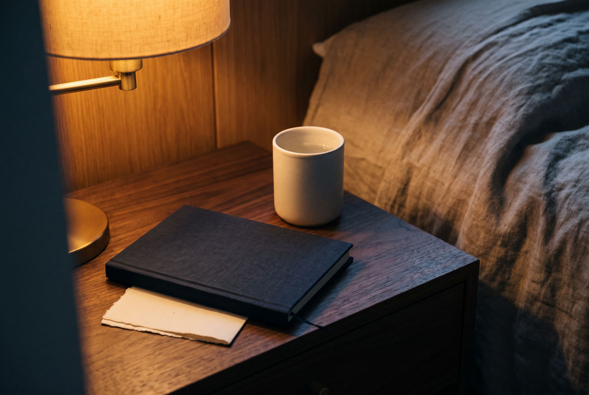

Amit sokan
inkább elhallgatnak
Az este nem mindig arról szól, ami a napirendben szerepel.
Vannak férfiak, akik a munka utáni fáradtságra fogják. Mások egyszerűen nem keresnek rá a témára. Pedig az önbizalom, a közelség és a mindennapi lendület sokkal több apró pillanatból áll, mint amennyit egyetlen mondat elbír.
Ez a videó nem ígér csodát. Egy nézőponttal indul: lehet, hogy a megszokott kérdéseket érdemes más sorrendben feltenni.
„Talán nem az a legérdekesebb, amit mindenki lát — hanem az, amit egy férfi magának sem nevez meg.”
Az első percekben egy egyszerű esti részlet bukkan fel. A folytatásban az előadó elmondja, miért érdemes végighallgatni, mielőtt bármit gondolnál róla.
Folytatom a videóval
A videóban szó esik a hétköznapi ritmusról, a figyelemről és egy olyan, otthon is ismerős részletről, amelyet sokan nem vesznek észre elsőre.
Megnézem a teljes filmet